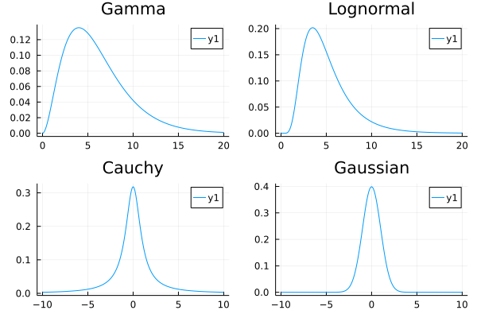
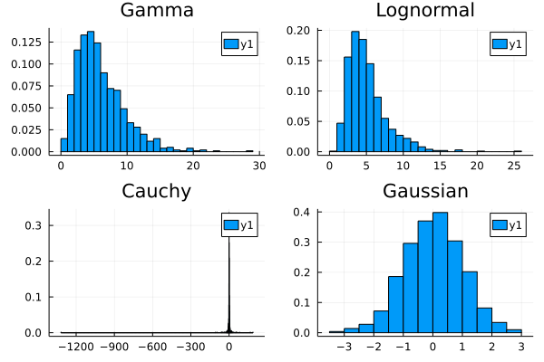
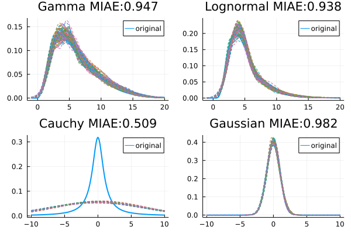
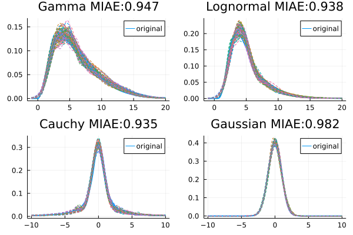
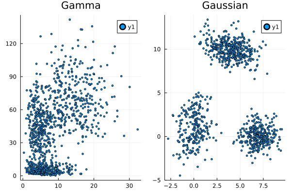
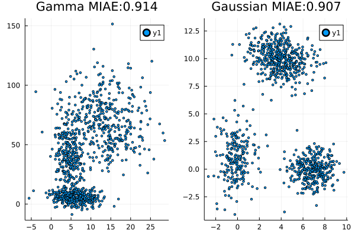

using scBayesDeconv
using Distributions
using Random
using Plots
import scBayesDeconv┌ Info: Precompiling scBayesDeconv [ba4b0364-d62a-4552-92b1-eb0a52360a94]
└ @ Base loading.jl:13421D distributions
# Generate data
d = Dict()
d["Gaussian"] = Normal(0,1)
d["Gamma"] = Gamma(3,2)
d["Lognormal"] = LogNormal(1.5,.5)
d["Cauchy"] = Cauchy(0,1)Cauchy{Float64}(μ=0.0, σ=1.0)l = []
for i in keys(d)
if i in ["Gaussian","Cauchy"]
x = range(-10,10,step=.1)
else
x = range(0,20,step=.1)
end
y = pdf.(d[i],x)
push!(l,plot(x,y,title=i))
end
plot(l...)
N = 1000
samples = Dict()
for i in keys(d)
x = reshape(rand(d[i],N),N,1)
samples[i] = copy(x)
endfunction fastMCD(X,p = ceil(Int,(sum(size(X))+1)/2);nrepeats=500)
rng = 0
hMin = nothing
sMin = Inf
for i in 1:nrepeats
idx = randperm(size(X,1))
h1 = X[idx[1:p],:]
s0 = 0
s1= 1
while ((det(s1)!=det(s0)) & (det(s1)!=0))
h0 = h1
s0 = cov(h0)
m = vec(mean(h0,dims=2))
Dis = vec(mapslices(x -> mahalanobis(x,m,inv(s0)),X,2))
ord = sortperm(Dis)
h1 = X[ord[1:p],:]
s1=cov(h1)
end
if det(s1)<det(sMin)
hMin = h1
sMin = s1
end
end
## Reweighting
sfull = cov(hMin)
tmcd = vec(mean(hMin,1))
dfull = vec(mapslices(x -> mahalanobis(x,tmcd,inv(sfull)),hMin,2))
smcd = (median(dfull.^2)/pdf(Chisq(size(X,2)),0.5))*sfull
dmcd = vec(mapslices(x -> mahalanobis(x,tmcd,inv(smcd)),hMin,2));
w = FrequencyWeights(((dmcd.^2).<pdf(Chisq(size(X,2)),0.975))*1)
t1 = mean(hMin,w,1)
s1 = cov(hMin,w,corrected=true)
(t1,s1)
endfastMCD (generic function with 2 methods)l = []
for i in keys(d)
if i in ["Gaussian","Cauchy"]
x = range(-10,10,step=.1)
else
x = range(0,20,step=.1)
end
y = rand(d[i],1000)
push!(l,histogram(y,normalize=true,title=i))
end
plot(l...)
fit = Dict()
for i in keys(d)
dist = infiniteGaussianMixture(samples[i])
fit[i] = deepcopy(dist)
endl = []
for i in keys(d)
if i in ["Gaussian","Cauchy"]
x = range(-10,10,step=.1)
else
x = range(-1,20,step=.1)
end
y = pdf.(d[i],x)
p1 = plot(x,y,label="original",linewidth=2)
for k in 2:1:100
y = ([pdf(fit[i].samples[k],[j]) for j in x])
plot!(p1,x,y,style=:dash,label=nothing)
end
f1(x) = pdf(d[i],x[1])
miae = []
for k in 2:1:100
f2(x) = pdf(fit[i].samples[k],x)
push!(miae, scBayesDeconv.metrics.MIAE(f1,f2,[-100. 100.],.1))
end
push!(l,plot(p1,title=string(i," MIAE:",round(mean(miae),digits=3))))
end
plot(l...)
Tuning the hyperparameters
In the case of the Cauchy distribution, the fat tails of the distribution lead to an estimation of the hyperparameter $\Sigma_0$ that makes the probability very broad and dominate the expression. In such a situation, a smaller variance could be helpful.
dist = infiniteGaussianMixture(samples["Cauchy"],Σ0=.5*ones(1,1))
fit["Cauchy"] = deepcopy(dist);l = []
for i in keys(d)
if i in ["Gaussian","Cauchy"]
x = range(-10,10,step=.1)
else
x = range(-1,20,step=.1)
end
y = pdf.(d[i],x)
p1 = plot(x,y,label="original",linewidth=2)
for k in 2:1:100
y = ([pdf(fit[i].samples[k],[j]) for j in x])
plot!(p1,x,y,style=:dash,label=nothing)
end
f1(x) = pdf(d[i],x[1])
miae = []
for k in 2:1:100
f2(x) = pdf(fit[i].samples[k],x)
push!(miae, scBayesDeconv.metrics.MIAE(f1,f2,[-100. 100.],.1))
end
push!(l,plot(p1,title=string(i," MIAE:",round(mean(miae),digits=3))))
end
plot(l...)
Higher dimensional distributions
# Generate data
d = Dict()
d["Gaussian"] = MixtureModel(
MultivariateNormal[
MultivariateNormal([0; 0.],[1 .5;.5 2]),
MultivariateNormal([0; 3.],[1 .5;.5 1]),
MultivariateNormal([7; 0.],[1 .1;.1 1]),
MultivariateNormal([4; 10.],[2 -.5;-.5 1])
],
[.2,.1,.3,.4]
)
d["Gamma"] = MixtureModel([
product_distribution([Gamma(3,2),Gamma(2,3)]),
product_distribution([Gamma(5,1),Gamma(7,7)]),
product_distribution([Gamma(10,1.5),Gamma(10,7)]),
]
)MixtureModel{Product{Continuous, Gamma{Float64}, Vector{Gamma{Float64}}}}(K = 3)
components[1] (prior = 0.3333): Product{Continuous, Gamma{Float64}, Vector{Gamma{Float64}}}(v=Gamma{Float64}[Gamma{Float64}(α=3.0, θ=2.0), Gamma{Float64}(α=2.0, θ=3.0)])
components[2] (prior = 0.3333): Product{Continuous, Gamma{Float64}, Vector{Gamma{Float64}}}(v=Gamma{Float64}[Gamma{Float64}(α=5.0, θ=1.0), Gamma{Float64}(α=7.0, θ=7.0)])
components[3] (prior = 0.3333): Product{Continuous, Gamma{Float64}, Vector{Gamma{Float64}}}(v=Gamma{Float64}[Gamma{Float64}(α=10.0, θ=1.5), Gamma{Float64}(α=10.0, θ=7.0)])N = 1000
samples = Dict()
for i in keys(d)
x = transpose(rand(d[i],N))
samples[i] = copy(x)
endl = []
for i in keys(d)
y = samples[i]
push!(l,scatter(y[:,1],y[:,2],normalize=true,title=i,markersize=2))
end
plot(l...)
fit = Dict()
for i in keys(d)
dist = infiniteGaussianMixture(samples[i],α=1,ignoreSteps=1000)
fit[i] = deepcopy(dist)
endN = 1000
l = []
for i in keys(d)
y = rand(fit[i].samples[2],N)
p1 = scatter(y[1,:],y[2,:],normalize=true,title=i,markersize=2)
f1(x) = pdf(d[i],x)
miae = []
for k in 2:10:100
f2(x) = pdf(fit[i].samples[k],x)
push!(miae, scBayesDeconv.metrics.MIAE(f1,f2,[-20. 150.;-20. 30.],.5))
end
plot!(p1,title=string(i," MIAE:",round(mean(miae),digits=3)))
push!(l,p1)
end
plot(l...)